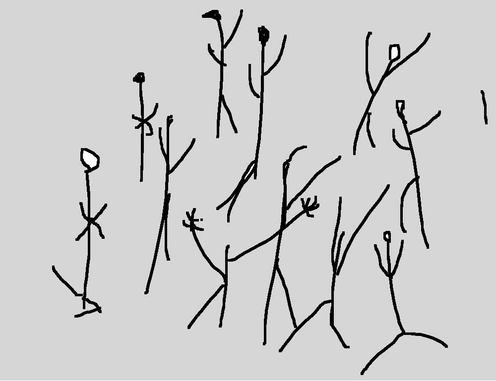
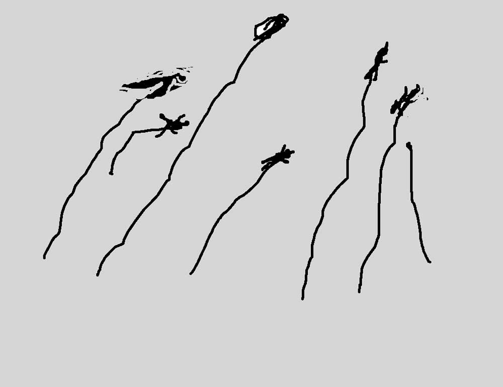
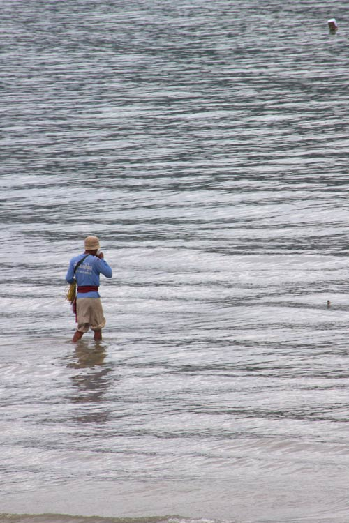
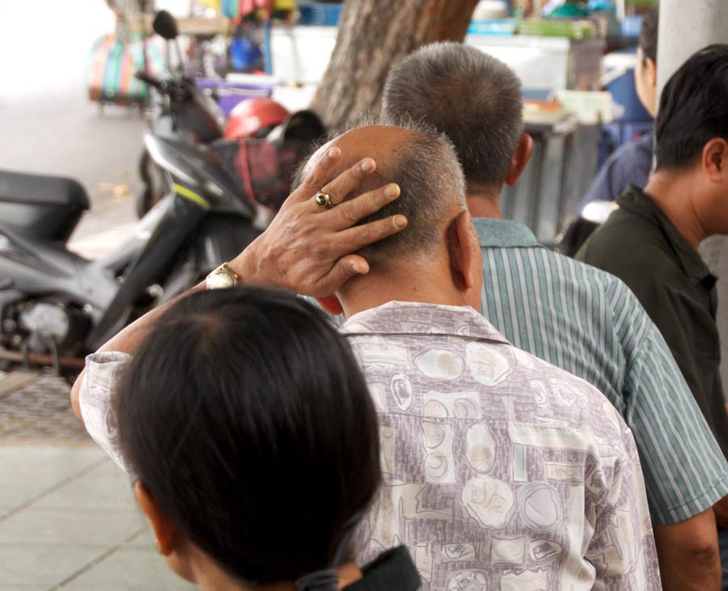
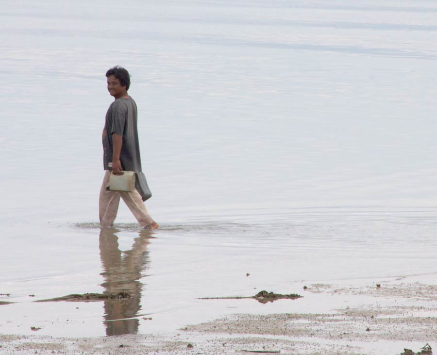

<!doctype html>
<html>
	<head>
		<meta charset="utf-8">
		<title>Théâtre Suivant</title>
		<meta name="viewport" content="width=1280"  />
		<title>Théâtre Suivant</title>
		<link rel="shortcut icon" href="img/favicon.ico" />
		<link rel="stylesheet" type="text/css" href="http://yui.yahooapis.com/2.9.0/build/reset/reset-min.css">
		<link rel="stylesheet" href="css/fonts.css" type="text/css" media="screen" />
		<link rel="stylesheet" href="css/style.theme4.css" type="text/css" media="screen" />
		<link rel="stylesheet" href="css/box.css" type="text/css" media="screen" />
	 	<link rel="stylesheet" href="http://code.jquery.com/ui/1.10.2/themes/smoothness/jquery-ui.css" />	
		<link rel="stylesheet" type="text/css" href="css/scrollbar.css" />
		<link rel="stylesheet" type="text/css" href="css/lightbox.css" />	
	
		<script type="text/javascript" src="https://ajax.googleapis.com/ajax/libs/jquery/1.7.2/jquery.min.js"></script>
		<script type="text/javascript" src="http://code.jquery.com/ui/1.10.2/jquery-ui.js"></script>
		<script type="text/javascript" src="js/jquery.ui.touch-punch.min.js"></script>
        	<script type="text/javascript" src="js/menu.js"></script>
		<script type="text/javascript" src="js/facescroll.js"></script>
		<script type="text/javascript" src="js/lightbox.js"></script>
        	<script type="text/javascript" src="js/jquery.zoomooz.js"></script>

		<script type="text/javascript">
		        jQuery.fx.interval = 42;
		jQuery(function(){
                                $('#article1-content').alternateScroll({ 'vertical-bar-class': 'styled-v-bar', 'hide-bars': false });
                                $('#article2-content').alternateScroll({ 'vertical-bar-class': 'styled-v-bar', 'hide-bars': false });
                                $('#article3-content').alternateScroll({ 'vertical-bar-class': 'styled-v-bar', 'hide-bars': false });
                        })	
			$(document).ready(function(){
			

			function displayPage() {
				$("#top").fadeOut(2000);
			}

			window.addEventListener("load", displayPage, false);
			window.addEventListener("unload", displayPage, false);

		    	$("a.transition").click(function(event){
      				event.preventDefault();
       				linkLocation = this.href;
       				$("#top").fadeIn(2000, redirectPage);     
			});
         
			 function redirectPage() {
       				window.location = linkLocation;
			  }
			
                        	$(".infos_link").click(function(evt) {
                                	$("#shadowing").css("height", $("#global").height() + "px");
                                	$("#shadowing").css("display", "block");
                                	$("#shadowing").animate( {"opacity": "0.8"}, 1500,'swing');
                        	});

                        	$(".infos_link_close").click(function(evt) {
                                	$("#shadowing").css("display", "none");
                                	$("#shadowing").css("opacity", "0.1");
                                	$(".box").css("opacity", "0.1");
                        	});

				$('#infos_link1').click(function(evt) {
    					$("#box1").css("display", "block");
					$("#box1").animate( {"opacity": "1"}, 500, 'swing');
				});
				$('#infos_link2').click(function(evt) {
                                        $("#box2").css("display", "block");
                                        $("#box2").animate( {"opacity": "1"}, 500, 'swing');
                                });
				$('#infos_link3').click(function(evt) {
                                        $("#box3").css("display", "block");
                                        $("#box3").animate( {"opacity": "1"}, 500, 'swing');
                                });
				$('#infos_link4').click(function(evt) {
                                        $("#box4").css("display", "block");
                                        $("#box4").animate( {"opacity": "1"}, 500, 'swing');
                                });

                	});
		</script>
</head>
	<body>
		<div id="top"></div>
		<div id="global">
		<div id="menu">
		<a href="index.html" class="transition" title="Accueil"></a>
		<ul>
  			<li><a href="theme1.html" title="">REGARDS</a></li>
  			<li><a href="theme2.html" title="">DITES-NOUS</a></li>
  			<li><a href="theme3.html" title="">REPÈRES</a></li>
  			<li><a href="theme4.html" title="">ÉCRITS</a></li>
  			<li><a href="theme5.html" title="">RÉFÉRENCES</a></li>
		</ul>
		</div>
		<div id="content">
 			<div id="infos">
			<a class="infos_link" id="infos_link1" href="javascript:void(0);">CONTACTS</a> |
			<a class="infos_link" id="infos_link2" href="javascript:void(0);">PARTENAIRES</a> |
			<a class="infos_link" id="infos_link3" href="javascript:void(0);">CRÉDITS</a> |
			<a class="infos_link" id="infos_link4" href="javascript:void(0);">LIENS</a>
			</div>

			<div id="shadowing"></div>
			<div class="box" id="box1">
      				  <div id="boxheader">
					<h2>CONTACTS</h2>
   					<span class="infos_link_close" id="boxclose" onClick="document.getElementById('box1').style.display='none';"> </span>
        			</div>
        	      		<div id="boxcontent">
        	     			<p>
Direction artistique artistique@theatresuivant.fr <br/>
Administration administration@theatresuivant.fr <br/>
<br/>
Tél. 01 30 96 96 23<br/>
Fax. 01 30 96 96 30<br/>
<br/>
Siège social<br/>
Théâtre Suivant<br/>
Mairie - 19, place Saint-Christophe<br/>
78117 Châteaufort<br/>
<br/>
Adresse postale / locaux de la compagnie temporairement installés à<br/>
Médiathèque du Canal<br/>
Bruissements - la Revue<br/>
Quai François Truffaut - BP 607<br/>
78056 Saint-Quentin-en-Yvelines cedex<br/>
<br/>
Théâtre Suivant est une association loi 1901<br/>
Siret 384 851 093 00045<br/>
Licences 2-1047059 3-1060835</p> 
				</div>
			</div>	
			<div class="box" id="box2">
                                  <div id="boxheader">
					<h2>PARTENAIRES</h2>
                                        <span class="infos_link_close" id="boxclose" onClick="document.getElementById('box2').style.display='none';"></span>
                                </div>
                                <div id="boxcontent">
                                <p>
                               Les Bruissements<br/>
<br/>
2011/12<br/>
<br/>
Communauté d'agglomération de Saint-Quentin-en-Yvelines, réseau des médiathèques de Saint-Quentin-en-Yvelines, la Ferme de Bel Ebat / théâtre de Guyancourt, rectorat de Versailles, Centre National du Théâtre, Maison Antoine Vitez / centre international de la traduction théâtrale, la Maison d'Europe et d'Orient, ville de Guyancourt
<br/><br/>
Résidence d’écrivain 2010 / Dorcy Rugamba
<br/><br/>
Conseil régional d'Ile-de-France, ville de Trappes, médiathèque Anatole France / Trappes, Maison de la Poésie à Saint-Quentin-en-Yvelines, Service Pénitentiaire d’Insertion et de Probation des Yvelines (SPIP) / Maison d’arrêt de Bois d’Arcy 
<br/><br/>
Les Ateliers Urbains
<br/><br/>
La ville de Montigny-le-Bretonneux, maison de quartier André Malraux / Montigny-le-Bretonneux<br/>

                                </p>
                                </div>
                        </div>
			<div class="box" id="box3">
                                  <div id="boxheader">
					<h2>CRÉDITS</h2>
                                        <span class="infos_link_close" id="boxclose" onClick="document.getElementById('box3').style.display='none';"></span>
                                </div>
                                <div id="boxcontent">
                                <p>
                                Webdesign et développement : Minyin Tu, Meddy Messaoudi, Mélanie Even<br/>
Affiches Grand bruit 2010, 2011, 2012 et 2013 Mélanie Even<br/>
Affiche Grand bruit 2009 Pierre Antoine Thierry<br/>
<br/>
Photo Grand bruit 2012 Homme-bulle, 2006 © Emilio López-Menchero, avec l’aimable autorisation de la galerie Nadja Vilenne, Liège<br/>
<br/>
Les bruissements de la langue est une formule empruntée à Roland Barthes in Le bruissement de la langue - Editions Points.  <br/>
                                </p>
                                </div>
                        </div>
			<div class="box" id="box4">
                                  <div id="boxheader">
					<h2>LIENS</h2>
                                        <span class="infos_link_close" id="boxclose" onClick="document.getElementById('box4').style.display='none';"></span>
                                </div>
                                <div id="boxcontent">
                                <p>
<ul>
<li><a href="http://www.cnt.asso.fr">Centre National du Théâtre - www.cnt.asso.fr</a></li>
<li><a href="http://www.mediatheques.agglo-sqy.fr/">Réseau des médiathèques de Saint-Quentin-en-Yvelines - www.mediatheques.agglo-sqy.fr</a></li>
<li><a href="http://www.maisonantoinevitez.com/">Maison Antoine Vitez / Centre international de la traduction théâtrale - www.maisonantoinevitez.com</a></li>
<li><a href="http://www.collectif-inoui.org/">Collectif Inouï - www.collectif-inoui.org</a></li>
<li><a href="http://www.lafermedebelebat.fr/">La Ferme de Bel Ebat / théâtre de Guyancourt - www.lafermedebelebat.fr</a></li>
<li><a href="http://www.editionstheatrales.fr/">Editions Théâtrales - www.editionstheatrales.fr</a></li>
<li><a href="http://nicolasguadagno.com/bienvenue.html">Nicolas Guadagno - http://nicolasguadagno.com</a></li>
<li><a href="http://www.myspace.com/archipass">ArchiPass - http://www.myspace.com/archipass </a></li>
<li><a href="http://www.amin-theatre.fr/fr/">La Friche des Lacs de l'Essonne - http://www.amin-theatre.fr/fr/</a></li>
</ul>
 </p>
                                </div>
                        </div>
		 <h1 id="sommaire">ÉCRITS : Fictions &amp; suggestions</h1>
		<h1 id="bruissements">BRUISSEMENTS</h1>	
		<div id="article1" class="zoomTarget bloc" class="scroll-pane" data-debug="false" data-closeclick="true">
                            <h3>CLANDESTINS</h3>
                                       <div id="article1-content" style="width:460px; height:300px; overflow:scroll">

                                        <p>Par Alain Landais*</p>
                                        <p>&nbsp; </p>
                                        <p>Il se souvient de son village où la terre est retournée à la poussière. La pluie est devenue un conte pour endormir la douleur, d'un autrefois, d'un âge d'or.</p>
                                        <p>&nbsp;</p>
                                        <p>Les vestiges des sillons se devinent encore. Trace des champs d'autrefois. retournant au désert. Un soc de charrue est emprisonné dans la gangue de poussière.</p>
                                        <p>&nbsp;</p>
                                        <p>Un autre se remémore la liberté, la démocratie. Un luxe pour nantis, pour ceux du Nord. </p><br>
                                        <p>Le grand Libérateur est devenu un tyran derrière les vitres blindées de la limousine qui traverse à tombeau ouvert les villages. Les élections sont libres, pas les âmes.</p><br>
                                        <p>Il faut fuir, prendre le chemin. La transhumance sur la piste défoncée, avec comme bagage la mémoire de la terre d'origine. Un bateau les attend sur une plage. Le passeur regarde les proies arriver. Ils ont quelque chose qui l'intéresse.</p><br>
                                        <p>La plage, c'est son territoire, un <i>no man's land </i>sur lequel on ne s'aventure pas par hasard. La clientèle est captive. Il aime son métier. Il sonde les âmes en partance mais ne s'abandonne jamais à la pitié. </p><br>
                                        <p>Lui, il ne fait pas dans le sentiment. C'est un pragmatique. Pauvre parmi les pauvres, pas question ! Il faut profiter de la misère et si ce n'était pas lui...</p>
                                        <p>&nbsp;</p>
                                        <p>Eux, ils viennent des terres. Ils n'ont jamais vu de bateau. Ils ne savent pas qu'ils s'y serreront agglutinés, peau contre peau, sueur contre sueur. La nuit, il faut attendre... comme seul repère la vague d'écume qui se désintègre sur le rivage.</p><br>
                                        <p>Il y a des patrouilles au large. S'échapper d'ici est un crime, une faute.</p><br>
                                        <p>L’odeur de la terre se délite dans la nuit. Les vapeurs lourdes du gasoil se mélangent à la brise saline. En d'autres temps et sur une autre embarcation, ce serait une croisière...</p>
                                        <p>&nbsp;</p>
                                        <p>La peur cède devant l'inconscience qui gagne les esprits. Désorientés au rythme court puis long des vagues. Le capitaine et son équipage d'infortune veillent. Ils font mine de connaître la route.<br>
                                            <br>
                                          La cargaison humaine est bien gardée. Corps contre corps, corps contre corps, corps contre cadavre... Péripétie d'une traversée ordinaire. L'espace libre est aussitôt occupé, l'instinct de vie reprend ses droits.</p><br>
                                        <p>Une autre plage se devine à l'horizon. La fin d'un cauchemar, l'esquisse d'un rêve. En désordre, les déracinés sans visa touchent terre. C'est le sol européen sur lequel ils s'introduisent par effraction. Certains crient à l'invasion. Comment voir une cinquième colonne, une armée secrète menaçante et belliqueuse dans ce débarquement ?<br>
                                                                                   </p>
                                        <p>&nbsp;</p>
                                        <p><br>
                                        </p>
                                        <p>Le sol est une fiction administrative et juridique. Le clandestin sans titre et sans nom contrevient à la loi. Il n'a pas le droit de vivre, de survivre sur le sol français. Il sait juste l'obligation et l'injonction de la misère ou de la dictature. Mais qui se préoccupe des destins individuels noyés dans l'anonymat anxiogène des flux migratoires ?</p>
                                        <p>&nbsp;</p>
                                        <p>Au cas par cas, l'alibi des gardiens et de ceux qui disent le Droit. L'Administration veille à la bonne et juste application de la loi, sans haine et sans état d'âme.</p>
                                        <p>&nbsp;</p>
                                        <p>Le fonctionnaire derrière le bureau ou le guichet est le garant des lois républicaines, objectif et neutre. Il se retranche derrière ce rempart légitime.</p>
                                        <p>&nbsp;</p>
                                        <p>« Mon travail, rien que mon travail », se persuade-t-il. Et si je ne le faisais pas, quelqu'un d'autre le ferait de la même manière. Un peu comme le passeur sur sa plage à attendre ses drôles de voyageurs.</p>
                                        <p>&nbsp;</p>
                                        <p>Depuis quand des lois républicaines seraient inhumaines ? À force d'entendre les mêmes discours, la misère, la dictature, les deux mêlées, il ne les entend plus ; Il soupçonne l'étranger d'affabuler, de noircir le tableau. Si on devait tous les croire, on accueillerait la misère du Monde entier.</p>
                                        <br><p>Le frère qui a été viré de l'administration et qui ne trouve plus de travail, le père qui a passé cinq ans en prison. Jusqu'à preuve du contraire, ils sont encore en vie et en liberté. Liberté surveillée mais c'est mieux que rien. L'asile politique, il en faut bien davantage pour le mériter. Il y a surtout la liste ministérielle des pays où les droits de l'Homme sont les plus menacés. </p>
                                      <br>  <p>Une furieuse flamme traverse son regard, la fierté du devoir accompli. Il est temps de rompre l'entretien. Rendez-vous le mois prochain avec les pièces justificatives demandées. Le fonctionnaire assure que sa situation peut être régularisée dans les meilleurs délais.</p><br>
                                        <p>L'étranger est sorti du bureau, son dossier sous le bras. Il pense soudain à la terre lointaine qu'il a quittée il y a si longtemps. Proche et lointaine à la fois. </p><br>
                                        <p>Fiction administrative, le sol de papier se dérobe sous ses pieds.</p>
                                        <p><br>
                                        </p>
          </div>
          </div>
		<div id="article2" class="zoomTarget bloc" class="scroll-pane" data-debug="false" data-closeclick="true">
                            <h3>LE LATIN THERAPEUTIQUE</h3>
                                       <div id="article2-content" style="width:180px; height:180px; overflow:scroll">

                                        <p>Par Lise-Noëlle Lauras*</p>
                                        <p>&nbsp; </p>
                                        <p>Mina se précipite sur le professeur. <br>
                                          -La professeuse de Latin, c’est vous ? »<br>
                                          -C’est bien moi ! »<br>
                                          La jeune fille reluque le professeur avec insolence. Le professeur ignore son jeu. <br>
                                          -Bien Mademoiselle, je vous vois tout –à -l’heure.<br>
                                          - Ouinf ! C’est c’qu’on verra ! Profère Mina devant son aréopage de bonnes copines.<br>
                                          Le professeur a entendu, mais elle est subitement devenue sourde. Elle compte les minutes qui lui restent avant le moment de prendre sa classe et affronter la rebelle.<br>
                                          A la sonnerie, elle pose un masque de sévérité sur son visage, rassemble les élèves, curieux de découvrir une discipline nouvelle avec un professeur qui dénote à leurs yeux. <br>
                                          -Vous êtes vieille Madame !<br>
                                          - Tu penses, j’aurai bientôt 150 ans ! <br>
                                          - Oh ! C’est pas vrai, pas possible !<br>
                                          -Si, si, je fais très jeune. Une chance, non ? <br>
                                          Le petit groupe rit en la suivant dans les couloirs de l’escalier. Mina a disparu. Arrivés devant la porte, pas de Mina. Le professeur installe ses élèves, envoie un délégué de classe chez le Conseiller Principal d’Education qui lui amène une Mina crachant son venin.<br>
                                          -Moi, de toutes façons le Latin, ce vieux truc pourri, j’en veux pas.  <br>
                                          -Assieds-toi devant !<br>
                                          -Où ?<br>
                                          -Là, devant moi !<br>
                                          -Pas question ! Je vais au fond.<br>
                                          Le cours commence. Qu’apprend-on avec le Latin ? Les doigts se lèvent. Le sens des mots ! L’orthographe. Oui ! Vous voyagerez dans le passé, vous verrez des personnes vivre à une autre époque, habillés autrement, penser différemment..<br>
                                           -C’est vrai, ça Madame ?<br>
                                          -Tout à fait. Prenez vos livres à la page 50.Que voyez-vous ?<br>
                                          -Des élèves et une classe. Ils allaient en classe ? <br>
                                          -Bien sûr, mais au lieu de cartable, ils avaient un volumen et un stylet pour gratter la cire d’un côté et de l’autre, écrire des mots. Notez avec moi: Verba volent, scriba manent .<br>
                                          Mina s’est tue. Elle se tortille sur sa chaise. Quand le professeur demande d’ouvrir les cahiers, Mina se lève.<br>
                                          - J’en ai pas. J’fais comment ? <br>
                                          -Emprunte une feuille de papier, tu recopies le cours dans un cahier pour la prochaine fois.<br>
                                          -Si vous croyez que ma mère a des sous pour acheter un cahier ! <br>
                                          La cloche sonne. Le cours s’est  à peu près bien  déroulé sauf que Mina est entrée en résistance. Eviter qu’elle ne devienne la star du cours de Latin.<br>
                                          Pendant la récréation, le Professeur consulte le Conseiller Principal d’Education. <br>
                                          -Désolée Madame, recommandation du Chef d’établissement, Latin thérapeutique a-t-il dit pour Mina. Vous êtes un peu sa dernière chance. <br>
                                          Mina porte de petites nattes tressées sur la tête en antennes de télévision, de gros yeux marron  qui lui mangent le visage et le corps dégingandé dune pré- adolescente, maigre comme un chat écorché, plus une voix de stentor.<br>
                                          Le lendemain, pendant la récréation, Mina apostrophe le professeur :<br>
                                          « -M’dame, j’ai mon cahier aujourd’hui !<br>
                                          -Bravo Mina, on fera du bon travail ensemble.<br>
                                          -Ouais, ça, c’est, si je veux.<br>
                                          -Et si je veux avec toi ?<br>
                                          -Faut voir! dit Mina, satisfaite d’avoir attiré l’attention du professeur. Exactement ce qu’elle désire: être reconnue.<br>
                                          A la sonnerie, les élèves suivent le professeur, Mina comprise. Minuscule victoire, le professeur sait qu’il faudra consolider une heure de rang, sans déstabiliser les autres élèves en enseignant le programme. Le cours les  intéresse. Ils sourient, contents de la nouveauté et d’avoir un professeur qui s’occupe de chacun d’eux. L’heure passe vite, Mina a presque joué le jeu. Elle a endormi l’ennemie. Dès la semaine suivante, elle contre-attaque :<br>
                                          -Et puis d’abord, ça sert à quoi le Latin ? Moi, ça m’intéresse pas, les langues vivantes, oui, mais les langues mortes, pouah : ça pue le cadavre ! Eclat de rire de ses camarades et du professeur.<br>
                                          -Oui, Mina, langue morte mais ô combien vivante, tu vas voir !<br>
                                          Le professeur démontre, les élèves s’enthousiasment, Mina a obtenu ce qu’elle voulait, un moment de dialogue personnel avec le professeur. <br>
                                          Tout se passe presque bien jusqu’au premier contrôle. Quelle épreuve de force pour le Professeur qui en sort victorieuse mais épuisée. Sur sa copie, Mina a posé son nom, son prénom, écrit la date et contrôle de Latin. Pour le premier contrôle, le professeur devra se contenter de cela. Pour une rebelle, un premier pas. <br>
                                          Quand elle rend les copies, le professeur propose à Mina : <br>
                                          -Tu fais le contrôle maintenant et je te note, ou alors, tu recopies la correction à la main et je te donne quelques points.<br>
                                          -C’et pas juste ! C’est de la triche ça Madame, je vais rien faire du tout. Vous m’avez donné I/10 ; avec cette vieille note, ça fait baisser ma moyenne ! <br>
                                          Remue-ménage des autres élèves qui savent, le professeur aussi, que Mina ne rend jamais un seul contrôle, pas même une copie à son nom. Au cours suivant, Mina n’a rien fait.<br>
                                          - Alors, vous allez me coller ? Je vous préviens, ma Mère, elle s’en fout, sait pas lire le français. <br>
                                          -Pourquoi déranger ta Maman, Mina, elle a d’autres choses à faire que de se préoccuper de ton contrôle de Latin !<br>
                                          - Alors, c’est ça, vous vous en foutez de moi ! <br>
                                          -Je ne me moque nullement de toi, et je te le prouve: lundi matin à 8 heures, tu viens recopier la correction, salle 304.<br>
                                          -J’peux pas, je dois accompagner mon petit frère et ma petite sœur à la maternelle.<br>
                                          -Mercredi matin, à 11heures, salle 201.<br>
                                          -Non, elle croit quoi celle-là, que j’ai qu’ça à faire le mercredi !<br>
                                          -Excuse-toi, tout de suite !<br>
                                          -Non !.<br>
                                          -Si !<br>
                                          La spirale fielleuse a commencé à tourbillonner. Le professeur doit l’arrêter. Tout de suite.<br>
                                          - Savez- vous comment étaient punis les élèves désobéissants chez les Romains ? Avec un fouet. L’élève corrigé publiquement, devant ses camarades effectuait la copie des devoirs.<br>
                                          - Alors vous allez me battre ? V’s avez pas le droit !<br>
                                          Le professeur reprend le cours, ignore Mina.<br>
                                          -Je vous ai posé une question hurle l’élève.<br>
                                          Vexée d’être traitée comme n’importe quelle élève insolente, elle sort du cours furieuse, ne vient ni lundi matin, ni mercredi. En dernière recours, le Conseiller Principal d’Education prend le relais. Mina  refait trois fois sa copie pour donner un devoir sans tache ni faute, obtient une note presque honorable. Note qui ne sanctionne pas l’apprentissage du latin mais celui des codes et des usages au Collège. A la fin de l’année, apprenant que son professeur ne sera plus au Collège à la rentrée, Mina pleure.                                                                                                Lise-Noëlle, novembre 2012<br>
                                        </p>
          </div>
    			</div>
			<div id="article3" class="zoomTarget bloc" class="scroll-pane" data-debug="false" data-closeclick="true">
                            <h3>ALLEZ ! SALUT !</h3>
                                       <div id="article3-content" style="width:260px; height:200px; overflow:scroll">

                                        <p>Par Martial Helbo*</p>
                                        <p>&nbsp; </p>
                                        <p>1.DEPART</p>
                                        <p>1<br>
                                          Qu'est-ce que tu fais ? <br>
                                          2<br>
                                          Tu vois, je pars. <br>
                                          1 <br>
                                          Comment ça, tu pars ? <br>
                                          2<br>
                                          Je pars, c'est tout. <br>
                                          1 <br>
                                          Tu pars, tu pars... Mais tu pars où ? <br>
                                          2<br>
                                          Loin. <br>
                                          1<br>
                                          Comment ça <i>loin</i> ? T'as vu ce que t'emportes ?<br>
                                          2 <br>
                                          Oui, et alors ?<br>
                                          1<br>
                                          Tu peux pas partir loin avec juste... <br>
                                          2 <br>
                                          Mais si, bien sûr. <br>
                                          1 <br>
                                          N'importe quoi ! Et, tu vas faire comment pour te loger ?<br>
                                          2 <br>
                                          T'inquiète pas pour moi. Au pire je dormirai dehors. <br>
                                          1<br>
                                          Et pour manger ? <br>
                                          2<br>
                                          Je trouverai bien, là-bas, des gens sympas, qui me dépanneront. <br>
                                          1 <br>
                                          Tu rêves ! Les gens, ils s'en foutent de toi ! Ils ont autre chose à penser. En tout cas, compte pas sur eux pour manger !<br>
                                          2 <br>
                                          Je leur proposerai mes services. Le boulot me fait pas peur ! <br>
                                          1 <br>
                                          Ils feront même pas attention à toi ! Si ça se trouve, ils vont te chasser de chez eux ! Tu les connais même pas ! <br>
                                          2<br>
                                          J'en ai marre d'ici, tu comprends ? Si je reste, je suis condamné à crever comme ça, dans la misère, jusqu'à la fin de ma vie ! <br>
                                          1<br>
                                          Mais tu m'as, moi ! Tu as nous ! On est là, nous ! On te laissera pas tomber ! On te connais depuis que tu es né !<br>
                                          2 <br>
                                          Justement, j'en ai marre de cette vie. Je vous aime bien, vous. Mais j'ai plus rien à attendre d'ici. Alors, je pars. J'ai envie d'autre chose, tu comprends ? <i>Un temps.</i> Allez ! Salut ! </p>
                                        <p>2 <i>s'éloigne tandis que 1 le regarde partir immobile.</i></p>
                                        <p>2. <i>NAUFRAGE</i></p>
                                        <p><i>A ET B se retrouvent dans un bistrot. On entend une radio.</i></p>
                                        <p>A <br>
                                          Bonjour. Tu prendras quelque chose ? <br>
                                          B <br>
                                          Ouais. Petit jus peut-être. <br>
                                          A <br>
                                          OK Garçon ! Deux cafés s'il vous plait. Alors, comment ça va ? <br>
                                          B <br>
                                          Bof, comme un lundi. </p>
                                        <p><i>La radio : « Le naufrage d’une embarcation de fortune transportant des migrants tunisiens près de Lampedusa a fait un mort et des dizaines de disparus.<br>
                                          «Nous avons récupéré 56 migrants, dont une femme, qui se trouvaient pour leur majorité près de l'îlot de Lampione, ou déjà arrivés sur ce gros rocher», proche de l'île de Lampedusa, a indiqué à l’AFP le commandant des garde-côtes, Filippo Marini.<br>
                                          Selon lui, «Ils sont en bonne santé même si certains souffrent d’hypothermie» après des heures passées dans l’eau. Les rescapés ont été emmenés au centre d’accueil de Lampedusa, rouvert pour l’occasion. »</i><br>
                                          A <br>
                                          Encore un bateau rempli de migrants qui a chaviré en Méditerranée la nuit dernière. <br>
                                          B<br>
                                          Encore ! Non, mais c'est pas vrai ! <br>
                                          A<br>
                                          C'est lamentable, quand même ! Pauvres gens ! <br>
                                          B <br>
                                          Ils sont dingues aussi de partir comme ça ! En plus, ils savent pas nager la plupart du temps ! <br>
                                          A<br>
                                          Mais comment ça peut se faire une chose pareille  ! <br>
                                          B <br>
                                          Avec une météo de merde en plus ! Aïe, aïe, aïe ! C'est de l'inconscience ! <br>
                                          A<br>
                                          Il y avait des femmes et des enfants, en plus ! <br>
                                          B <br>
                                          Avec une survivante ! Tu parles! <br>
                                          A <br>
                                          Quelle misère ! <br>
                                          B <br>
                                          Dis donc, ça doit être sacrément la misère chez eux pour qu'ils se balancent à la mer, comme ça, sans savoir où ils vont. <br>
                                          A <br>
                                          Sûrement, ou alors, c'est qu'on leur raconte trop de bobards. Du genre... le confort, le luxe, l'Europe,<br>
                                          le fric! Tout ça  ! La belle vie, quoi ! <br>
                                          B <br>
                                          Tu parles ! Ils ont aucune idée de ce qui les attend, ces gens-là  ! S'ils savaient, ils tenteraient même pas ! <br>
                                          A <br>
                                          ça me mine, moi, ces trucs-là. Je sais vraiment pas quoi faire... <br>
                                          B <br>
                                          Qu'est-ce que tu veux ? C'est la vie, ça, mon vieux. <br>
                                          A<br>
                                          &quot;C'est la vie, ça, mon vieux&quot; ! C'est tout ce que tu trouves à dire, toi ? Ben, peut-être que ça te suffit, à toi, mais moi, ça passe pas ! Là ! <br>
                                          B <br>
                                          Désolé de te contrarier, mon gars, mais qu'est-ce qu'on y peut  ? On n'y peut rien, je te le dis, moi. <br>
                                          A <br>
                                          Peut-être, mais moi, qu'est-ce que tu veux, ça me dérange. Je peux pas être complètement peinard en sachant tout ce qui se passe là-bas. <br>
                                          B <br>
                                          Oui, ben, désolé. C'est pas ma faute, à moi ! <br>
                                          A <br>
                                          Je me fous bien que ce soit de ta faute ou pas ! Je trouve pas ça normal ! C'est tout! B Hé ! T'énerve pas comme ça, mon gars ! J'y suis pour rien, moi ! T'as qu'à donner du fric aux organisations humanitaires si ça peut te soulager la conscience. A ça fait des années que je donne ! Et pour quels changements ?<i> Un temps</i>. Et puis, tu sais, se donner bonne conscience, je trouve ça un peu facile. Non, ce qu'il faudrait, c'est que tout ça s'arrête. Voilà. B Oui, mais comment ? A J' en sais rien, moi. Déjà, la plupart du temps, les gouvernants africains sont pourris, alors. Ils ont pris le pouvoir par les armes. Ils défendent leurs petits intérêts personnels. Des dictatures quoi ! Là-bas, les urnes, euh...<br>
                                          <i>Il fait le geste de: &quot;On s'en fout&quot;.</i><br>
                                          Tu vois ce que je veux dire. <br>
                                          B <br>
                                          Tu peux pas plaquer les valeurs occidentales, comme ça, tel quel, sur des pays qui sortent à peine de la colonisation. La démocratie est un long apprentissage, je te rappelle. <br>
                                          A <br>
                                          Je crois surtout que c'est l'aide internationale qui laisse à désirer. <br>
                                          B <br>
                                          C'est possible, mais, est-ce qu'on est prêt, nous, à mettre la main à la poche ? Je trouve qu'actuellement, on a plutôt tendance à fermer nos frontières, tu ne trouves pas ? <br>
                                          A <br>
                                          C'est vrai. En plus les médias et les politiques ne jouent pas correctement leur rôle. <br>
                                          B <br>
                                          C'est un autre problème. Ceci dit, rien ne t'empêche d'aller chercher les informations, par toi-même, là où elles sont. Tu peux militer aussi, c'est pas interdit. <br>
                                          A <br>
                                          Tu crois pas si bien dire, mon pote. Je vais y réfléchir, justement. Allez. Salut. <br>
                                          B<br>
                                          Salut. <i>Un temps</i>. Hé ! T'as même pas bu ton café !</p>
                                        <p><br>
                                        </p>
    </div>
                        </div>
                         <div id="image1">
                                    
                         </div>
			<div id="image2">
                                    
                         </div>
			<div id="image3">
                                    
                         </div>
			<div id="image4">
                                    
                         </div>
			<div id="image5">
                                    
                         </div>
			<div id="image6">
                                    
                         </div>
                        <div id="image7">
                                    
                         </div>
			<div id="image8">
                                    
                         </div>
                        <div id="image9">
                                    
                         </div>
			<div id="image10">
                                    
                         </div>
                        <div id="image11">
                                    
                         </div>
		</div>
		</div>
		<script type="text/javascript">
                var _gaq = _gaq || [];
                _gaq.push(['_setAccount', 'UA-40455655-1']);
                _gaq.push(['_trackPageview']);
                (function() {
                        var ga = document.createElement('script'); ga.type = 'text/javascript'; ga.async = true;
                        ga.src = ('https:' == document.location.protocol ? 'https://ssl' : 'http://www') + '.google-analytics.com/ga.js';
                        var s = document.getElementsByTagName('script')[0]; s.parentNode.insertBefore(ga, s);
                })();
                </script>
	</body>
</html>
